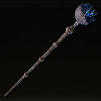
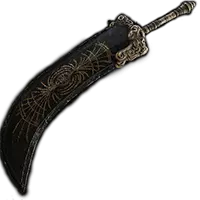
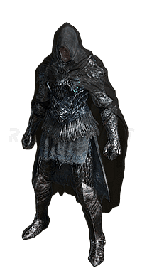

Weapons
Weapons in Elden Ring are fundamental and the main way to harm our enemies, among these there are Seals, heavy and light weapons, and batons or staffs.
In this section you can find from staffs like these ones

Even great swords like this one

Swift daggers like the black knife of the order with the same name
